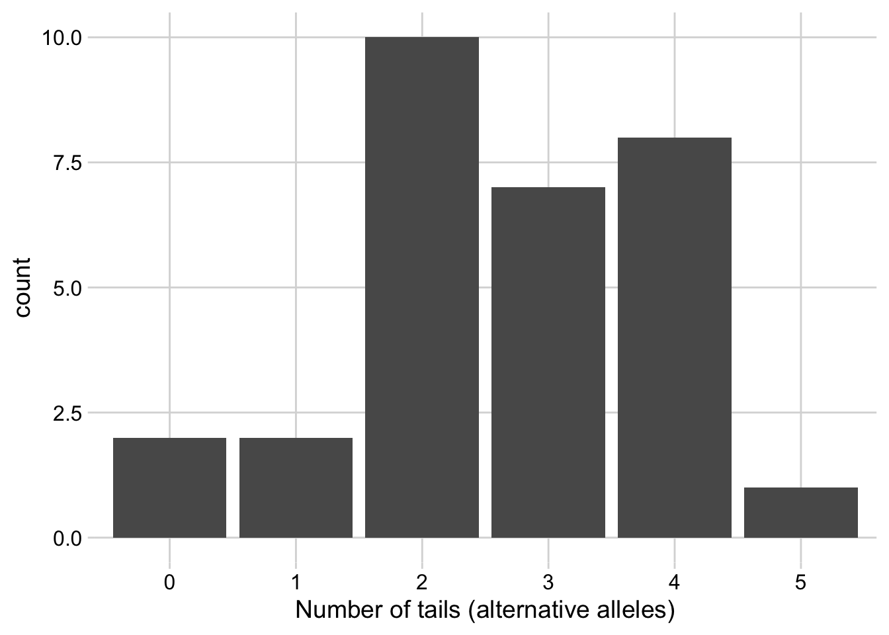
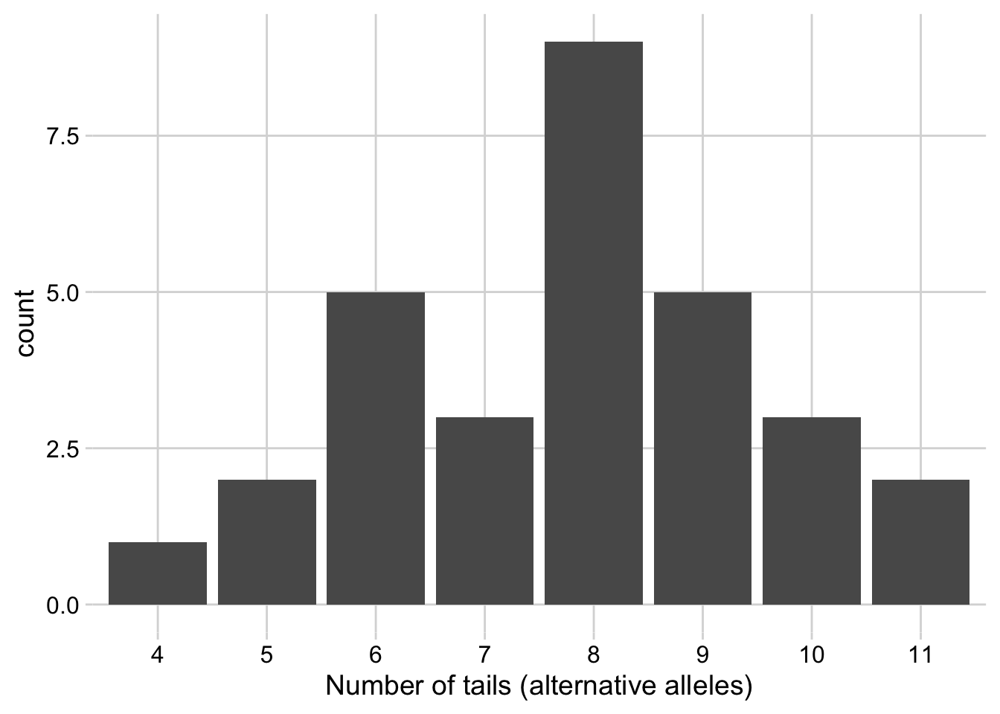
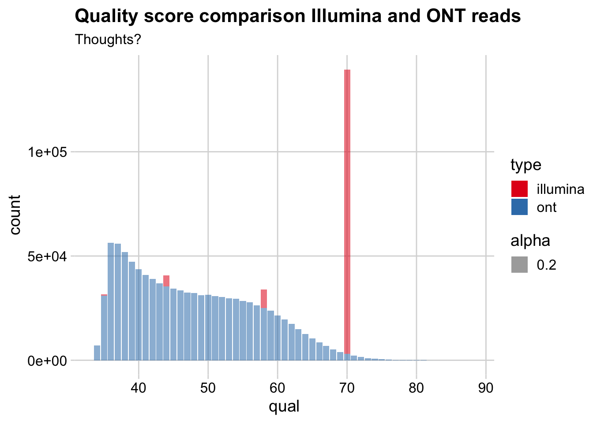

choose(3, 1) * 0.5**1 * (1 - 0.5)**(3-1)[1] 0.375# or . . .
dbinom(x = 1, size = 3, prob = 0.5)[1] 0.375Allele sampling can be modeled as a coin flipping exercise.
With fair coin, the \(P(heads)\) = 0.5 and \(P(tails)\) = 0.5.
With fair genome sequencing of heterozygous C/T position, P(C) = 0.5 and P(T) = 0.5
The probability of k successes in n trials is given by the probability mass function:
\[ Pr(X=k) = {{n}\choose{k}} p^k(1-p)^{n-k} \]
Using this, we can ask: what is the probability of seeing \(k = 1\) tails in \(n = 3\) flips of a fair coin with \(P(tail)\) = 0.5?
choose(3, 1) * 0.5**1 * (1 - 0.5)**(3-1)[1] 0.375# or . . .
dbinom(x = 1, size = 3, prob = 0.5)[1] 0.375Let’s say we sequence my genome to 30x coverage, i.e. each site is covered by a mean of 30 reads.
Each read is a random sample from millions of double-stranded DNA fragments. After read alignment, is every site going to be covered by 30 reads?
No! Some sites have 17 reads aligned, some have 35. And this randomness is the problem we’re trying to address.
We model the alleles at each site as a binomial random variable that can hold one of two values. Think heads and tails of a coin, or reference and alternative alleles at a site.
We can use rbinom() to look at the distribution of outcomes.
n: number of people tossing coins, or sites in the genomesize: number of times you looked at the coin, or looked at a site with a sequencing read, i.e. the sequencing coverageprob: probability of success (i.e., probability of tails with a fair coin)n <- 30
size <- 5
prob <- 0.5
barplot(table(rbinom(n, size, prob)))
Ready your coin!
We’re going to play a game.
Imagine you are all different sites in the genome. Your true identity (your genotype) is hidden. We are going to discover your true identity by flipping a coin.
For each set of coin flips, record the number of alternative alleles (tails) you see.
For those of you that are HETEROZYGOUS, we will learn your identity ONLY after 50% of your flips are alternative alleles (3 at toss6, 6 at toss12, 16 at toss32)
Enter the number of times you see tails after flipping 6, 12, and 32 times on this spreadsheet:
https://docs.google.com/spreadsheets/d/149q8wg6ctodnjZxnDj1SWUIw_Bjgvf9T0iVAvud0dVI/edit?usp=sharing
sample(c('REF', 'ALT'), 1)[1] "REF"plot_tosses <- function(x) {
# returns a plot
ggplot(fct_count(as.factor(x)), aes(f, n)) +
geom_col() +
labs(
x = "Number of tails (alternative alleles)",
y = "count"
) +
theme_minimal_grid()
}What is the distribution of tails (alternate alleles) we expect to see after 6 tosses?
# theory
n <- 30
size <- 5
prob <- 0.5
# plot of counts
x <- rbinom(n, size, prob)
plot_tosses(x)
# real data What is the distribution of tails (alternate alleles) we expect to see after 12 tosses?
# theory
# theory
n <- 30
size <- 15
prob <- 0.5
# plot of counts
x <- rbinom(n, size, prob)
plot_tosses(x)
# real dataWhat is the distribution of tails (alternate alleles) we expect to see after 32 tosses?
# theory
# real dataThe binomial makes two assumptions:
When might these assumptions be violated by real genome sequencing data?
Examine the heterozygous alignment slide
In the chunks above, each time we run rbinom() we get a different random sample. We can make this sample reproducible by setting a seed just before each random call:
# not reproducible
x <- rbinom(10, 30, 0.5)
y <- rbinom(10, 30, 0.5)
all(x == y)[1] FALSE# reproducible
set.seed(1)
x <- rbinom(10, 30, 0.5)
set.seed(1)
y <- rbinom(10, 30, 0.5)
all(x == y)[1] TRUEWhat happens if you change the seed value above? I.e. Compare the values produced after set.seed(1) and set.seed(42).
The setting of seeds is a valuable tool if you want to generate a completely reproducible pipeline for others to run.
For example, the process of generating two-dimensional UMAP (or t-SNE) projection is a random process. You can recover the same projection each time by setting a seed at the appropriate step.
sum(dbinom(10:20, 20, 0.5))[1] 0.5880985sum(dbinom(0:10, 17, 0.5))[1] 0.833847all() to confirm whether the samples are identical .runif(100) [1] 0.20597457 0.17655675 0.68702285 0.38410372 0.76984142 0.49769924
[7] 0.71761851 0.99190609 0.38003518 0.77744522 0.93470523 0.21214252
[13] 0.65167377 0.12555510 0.26722067 0.38611409 0.01339033 0.38238796
[19] 0.86969085 0.34034900 0.48208012 0.59956583 0.49354131 0.18621760
[25] 0.82737332 0.66846674 0.79423986 0.10794363 0.72371095 0.41127443
[31] 0.82094629 0.64706019 0.78293276 0.55303631 0.52971958 0.78935623
[37] 0.02333120 0.47723007 0.73231374 0.69273156 0.47761962 0.86120948
[43] 0.43809711 0.24479728 0.07067905 0.09946616 0.31627171 0.51863426
[49] 0.66200508 0.40683019 0.91287592 0.29360337 0.45906573 0.33239467
[55] 0.65087047 0.25801678 0.47854525 0.76631067 0.08424691 0.87532133
[61] 0.33907294 0.83944035 0.34668349 0.33377493 0.47635125 0.89219834
[67] 0.86433947 0.38998954 0.77732070 0.96061800 0.43465948 0.71251468
[73] 0.39999437 0.32535215 0.75708715 0.20269226 0.71112122 0.12169192
[79] 0.24548851 0.14330438 0.23962942 0.05893438 0.64228826 0.87626921
[85] 0.77891468 0.79730883 0.45527445 0.41008408 0.81087024 0.60493329
[91] 0.65472393 0.35319727 0.27026015 0.99268406 0.63349326 0.21320814
[97] 0.12937235 0.47811803 0.92407447 0.59876097set.seed(1)
x <- runif(100)
set.seed(1)
y <- runif(100)
all(x == y)[1] TRUEFrom binomial theory, we learned we need a certain level of coverage to generate reliable variant calls, due to the randomness of sampling alleles at a site using sequencing.
We also learned that reads are not distributed randomly in a genome. Coverage is itself a distribution, and we typically discuss it’s mean. I.e. 30-fold coverage means on average each base is sequenced 30 times.
How do we estimate the numbers of times a base is expected to be sequenced given a certain level of coverage?
This theory comes from Lander and Waterman, who made two assumptions about sequencing:
They concluded that read coverage is modeled by the Poisson distribution.
The Poisson probability function is:
\[ P(Y = y) = \frac{{ e^{ - C } C ^ y }} {{ y!}} \] where:
y is the number of times a base is read. It is the exact number of times a base is sequenced.C is the mean coverage (lambda in the traditional Poisson sense). It’s the mean number of aligned reads covering a site.The formula above gives the probability of a base being sequenced a certain number of times.
For example, what is the probability of a base being sequenced 3 times or less at at mean coverage of 10?
y <- 0:3
C <- 10
sum(dpois(y, C))[1] 0.01033605# or ...
ppois(3, C)[1] 0.01033605What if we’re trying to characterize heterozygous alleles in a human genome at differing levels of coverage?
# size (bp) of the haploid human genome
G <- 3e9
# chance of seeing a common variant in a random person. comes from e.g.
# https://www.nature.com/articles/nature15393
p_var <- 1/700
# calculate number of variants
n_var <- G * p_var
n_var[1] 4285714ppois(0, 5) * n_var[1] 28876.92ppois(0, 15) * n_var[1] 1.31101ppois(0, 30) * n_var[1] 4.01041e-07This theory boils down to a general equation, the Lander/Waterman equation, for computing the coverage you have given a certain level of sequencing:
\[ C = LN / G \]
where:
C is coverage. I.e., the mean number of times each base is covered by a read.G is the haploid genome length. E.g., 3e9 for the human genome.L is the read length. On Illumina, typically 300 bp.N is the number of reads.Let’s use this equation to calculate the coverage for a few different genomes, given fixed read number and length.
G_yeast <- 12e6
G_human <- 3e9
L <- 300
N <- 20e6
C_yeast <- (L * N) / G_yeast
C_human <- (L * N) / G_humanObviously those parameters provide a powerful approach for yeast genetics, but much less so for human genetics.
On an Illumina Novaseq 6000, each 300 bp read costs about 3^{-5} USD.
How much would it cost to sequence a single human at 30X coverage? Does that number surprise you?
# how many reads do we need?
# note that each read is 300 bp (150 bp from each end of a fragment)
n <- (30 * 3e9) / 300
# how much does each read cost?
cost <- 3e4 / 10e9
n * costError rate of sequencing can have a big impact on variant interpretation.
Illumina error rates are relatively low, ONT rates are relatively high. We’ll look at this by pulling quality scores from a 1,000 reads from the Illumina and ONT platforms.
First, read data from the FASTQ files. This is not rectangular data, so we’ll use Python.
import gzip
from collections import Counter
def qual_counts(fq_gz):
quals = Counter()
nl = 0
with gzip.open(fq_gz, 'rb') as fq:
for line in fq:
if nl % 4 == 3:
quals.update(line.strip())
nl += 1
return quals
illumina_quals = qual_counts('data/illumina.fastq.gz')
ont_quals = qual_counts('data/ont.fastq.gz')
fh = open('quals.tsv', 'w')
for qual, count in illumina_quals.items():
print(qual, count, 'illumina', file=fh, sep='\t')
for qual, count in ont_quals.items():
print(qual, count, 'ont', file=fh, sep='\t')
fh.close()The counts are in TSV format now, back to R (phew).
tab <- read_tsv('quals.tsv', col_names = c('qual','count','type'))Rows: 59 Columns: 3
-- Column specification --------------------------------------------------------
Delimiter: "\t"
chr (1): type
dbl (2): qual, count
i Use `spec()` to retrieve the full column specification for this data.
i Specify the column types or set `show_col_types = FALSE` to quiet this message.ggplot(tab, aes(qual, count, fill = type, alpha = 0.2)) +
geom_col() +
labs(
title = 'Quality score comparison Illumina and ONT reads',
subtitle = 'Thoughts?'
) +
theme_minimal_grid() +
scale_fill_brewer(palette = 'Set1')
Why don’t we just sequence everybody to, like, 1000-fold coverage, and not worry about binomial sampling theory?
Determine the number of reads needed to sequence the human genome to 1000X coverage given the data below.
# standard Illumina read length
L <- 300
# size (bp) of haploid human genome
G <- 3e9
# Use the Lander-Waterman equation to solve for read number:Now figure out how much this experiment would cost.
# How much would this cost?
usd_per_bp <- 30e4 / 10e9How might you dramatically reduce the cost of this experiment, but retain much of the useful information acquired from the genome? I.e., how would you “zoom in” to informative portions of the genome?
Thought experiment: The organism you’re studying happens to be tetraploid (like salmon). You want to use genome sequencing to identify variants in an individual. How does this change the way you think about allele sampling and coverage?
Thought experiment: How does this theory impact your thinking in designing an experiment where coverage variation along the genome is the signal (e.g., chromatin immunoprecipitation + sequencing).
Given what you learned about read coverage sampling, what statistical models do you think “peak calling” algorithms use?
The slides and content around the theory of variant sampling were borrowed from Aaron Quinlan’s Applied Computational Genomics course.